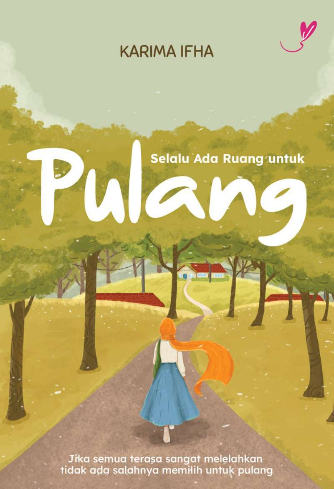

Selalu ada ruang untuk pulang
Rp150.000
Selalu Ada Ruang untuk Pulang adalah novel yang bercerita tentang perjalanan seseorang mencari makna rumah dan penerimaan. Kisah ini menyoroti tokoh yang sempat menjauh karena luka, konflik, atau kesalahan di masa lalu, lalu perlahan menyadari bahwa pulang bukan hanya soal tempat, tetapi tentang orang-orang yang tetap menunggu dan menerima. Novel ini menggambarkan kerinduan, penyesalan, dan proses berdamai dengan diri sendiri serta keluarga, dengan pesan bahwa seberat apa pun masa lalu, selalu ada ruang untuk kembali dan memperbaiki hubungan.

No Body Knows But You
Rp.99.000
Novel ini berkisah tentang seorang remaja perempuan yang menghabiskan liburan musim panas dengan bekerja di sebuah penginapan kecil. Awalnya hidupnya terasa biasa saja, sampai ia mulai menemukan petunjuk-petunjuk aneh tentang sebuah rahasia masa lalu yang melibatkan orang-orang di sekitarnya..

The Shatterred vouws
Rp110.000
Buku ini membahas tentang mengisahkan tentang janji, cinta, dan penyesalan..

Rindu Yang Tak Pernah Sirna
Rp109.000
Rindu yang Tak Pernah Sirna adalah novel romantis drama yang mengangkat kisah tentang kerinduan mendalam, cinta yang terpisah oleh keadaan, dan kenangan yang sulit dilupakan. Cerita berfokus pada tokoh yang harus menerima perpisahan, baik karena jarak, waktu, maupun takdir, namun perasaan rindunya tetap hidup dan tidak pernah benar-benar hilang.

Kehidupan sebuah Ransel
Rp100.000
Buku Kehidupan Sebuah Ransel menceritakan perjalanan hidup sebuah ransel yang setia menemani pemiliknya dari hari ke hari. Lewat sudut pandang si ransel, pembaca diajak melihat berbagai peristiwa di sekolah, rumah, dan perjalanan lain yang penuh cerita. Ransel ini menjadi saksi suka dan duka: tugas sekolah yang menumpuk, cita-cita yang perlahan tumbuh, rasa lelah, kegembiraan, hingga proses belajar tentang tanggung jawab dan ketekunan. Dengan bahasa sederhana dan penuh makna, cerita ini mengajarkan nilai-nilai seperti kesetiaan, kerja keras, rasa syukur, dan pentingnya menghargai hal-hal kecil yang sering dianggap sepele. Meski tokohnya benda mati, kisahnya terasa dekat dengan kehidupan sehari-hari, terutama bagi pelajar.

Berandal Bandung
Rp108.000
Berandal Bandung bercerita tentang Harugo Nubagja, seorang panglima geng motor bernama The Bandrex yang berasal dari Bandung. Ia dikenal sebagai sosok yang kuat dan bijaksana oleh teman-temannya, tapi di balik itu semua Harugo menyimpan luka batin dan penderitaan yang dalam. Kehidupan Harugo mulai berubah ketika ia bertemu dengan Miseila Viona, seorang wanita yang mampu membawa kebahagiaan dan harapan baru ke dalam hidupnya. Namun, hubungan itu tidak berjalan mulus — berbagai badai kehidupan datang silih berganti dan akhirnya menghancurkan kisah cinta mereka. Harugo harus menghadapi kehilangan orang-orang yang penting baginya dan perjuangan batin yang berat sambil mencoba bangkit lagi dan lagi. Meski berusaha kuat, kenangan tentang Miseila terus menghantuinya. Cerita ini mengikuti bagaimana Harugo berjuang dengan takdirnya: apakah ia bisa menemukan kembali kebahagiaan atau akan terus terjebak dalam duka? Buku ini menggabungkan unsur kisah cinta, konflik sosial, perjuangan hidup, dan tragedi, dengan latar suasana khas Kota Bandung dan kehidupan geng motor yang penuh dinamika.